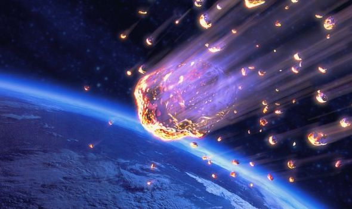

About
Asteroids are small, rocky solar system bodies that populate interplanetary space out to the orbit of Jupiter. There are millions of them, and they are often grouped by their composition. The planetary science community refers to them as minor planets, a general term applied to solar system bodies smaller than moons. Asteroids are mainly made of materials left over from the formation of the inner solar system words.